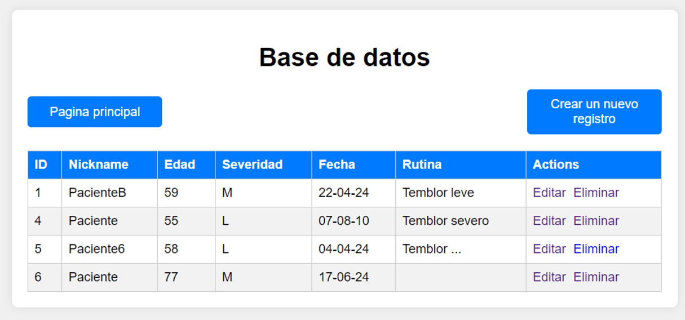

César Gutiérrez Flores
Bachiller en Ingeniería Electrónica apasionado por la tecnología y la innovación.
Tengo experiencia en desarrollo de software, sistemas embebidos e Internet of Things (IoT).
Busco una oportunidad para aplicar mis conocimientos y habilidades en proyectos desafiantes aportando a su equipo.
üè´ Laboratorio LIBRA PUCP
Estuve encargado del desarrollo del software de monitoreo de temblores de manos en pacientes de Parkinson utilizando sensores y microcontroladores.
Equipo
- Erick Toque
- Rosa Silva
- Sebastián Vila

Formación Complementaria
+ Sobre mí
En construcción...